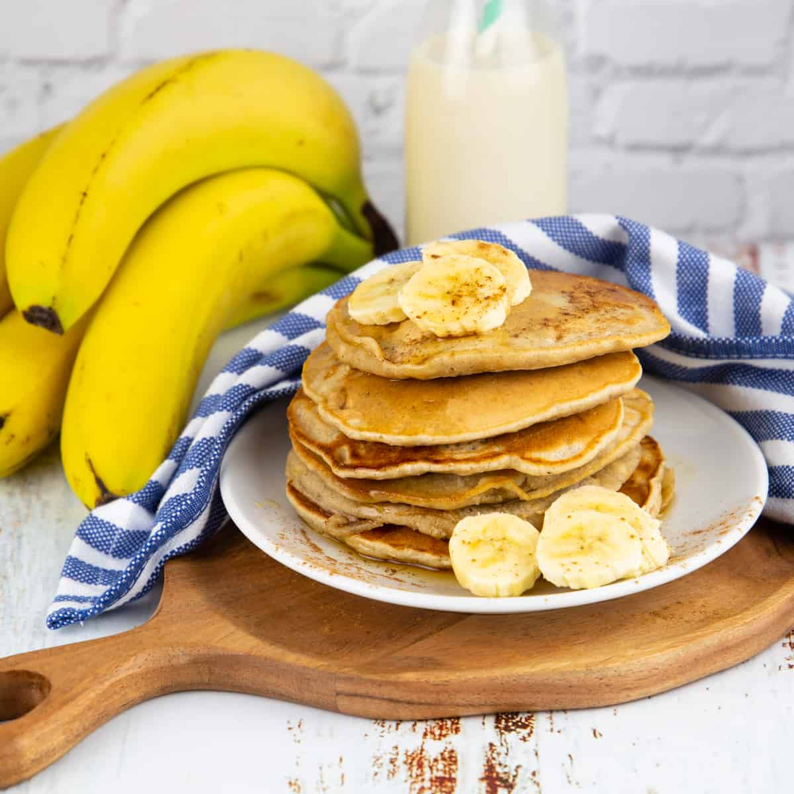

Vegan Banana Pancakes

Description
Easy vegan banana pancakes! Perfect for a delicious vegan breakfast topped with sliced bananas and syrup. Light, fluffy and perfect.
Ingredients
- 1 ¼ cups All Purpose Flour (156g)
- 2 Tbsp White Granulated Sugar
- 1 Tbsp Baking Powder
- ¼ tsp Salt
- 1 tsp Cinnamon
- ½ cup Mashed Banana (120g, about 1 large ripe banana)
- 1 Tbsp Coconut Oil + more for frying
- ¾ cup Soy Milk (180ml) or another non-dairy milk
- 1 tsp Vanilla Extract
Steps
- Sift the flour into a mixing bowl and add the sugar, baking powder, salt and cinnamon, mix together.
- Mash the banana in a bowl and add the coconut oil and mash together. Add to the mixing bowl with the soy milk and vanilla and mix in. Your batter will be fairly thick.
- Heat up a pan with a little coconut oil until hot and then add in some batter for your first pancake, around ¼ cup of batter at a time. When the pancake starts looking dry along the sides with little bubbles on top, then flip it over until browned on the other side. Keep flipping and pushing down with your spatula until the pancakes are very nicely browned and the inside has had a chance to cook through.
- Serve pancakes with some sliced bananas, other fresh fruits as you like and syrup for drizzling.